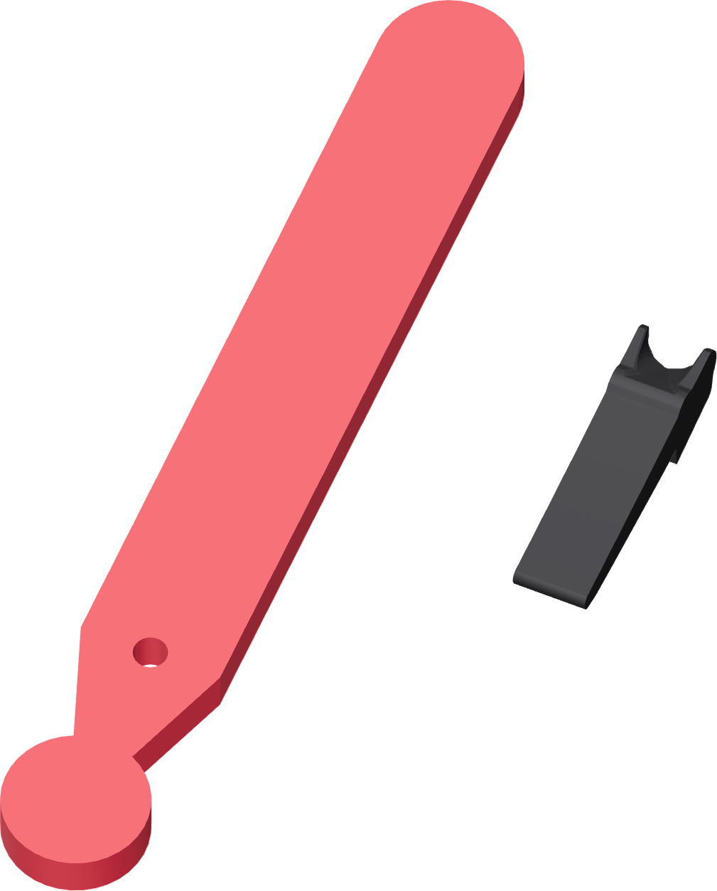

Two levers, two jobs
The long press lever provides insertion force. The small faucet lever operates the valve and stays attached throughout the operation.

| In a picture | Means |
|---|---|
| Coral | The part or fastener this step adds or moves. Existing printed structure stays black. |
| Brass | A threaded metal nut. |
| Blue | An alignment tool or reference mark. |
| Grey metal | The Touch-Flo or a fitted metal fastener. |
Fasteners float off their own holes along the direction they enter. The picture identifies the joint; the stated size identifies the fastener. Do not measure a picture.
Finished when
A box like this describes the observable result of the action on that page.